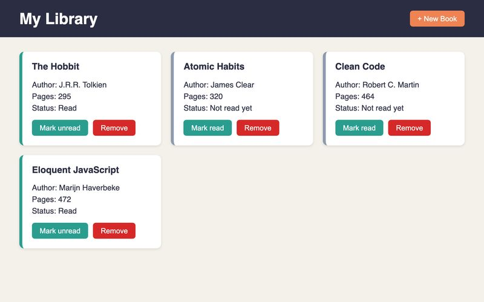
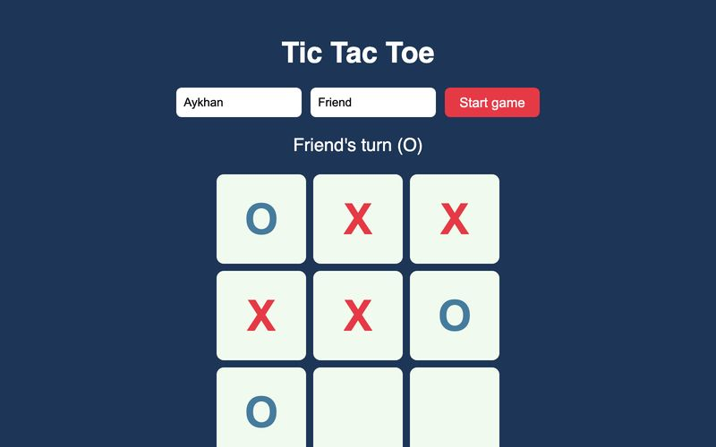
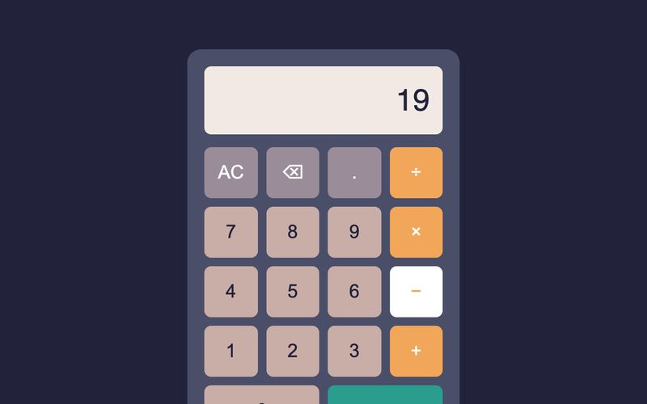
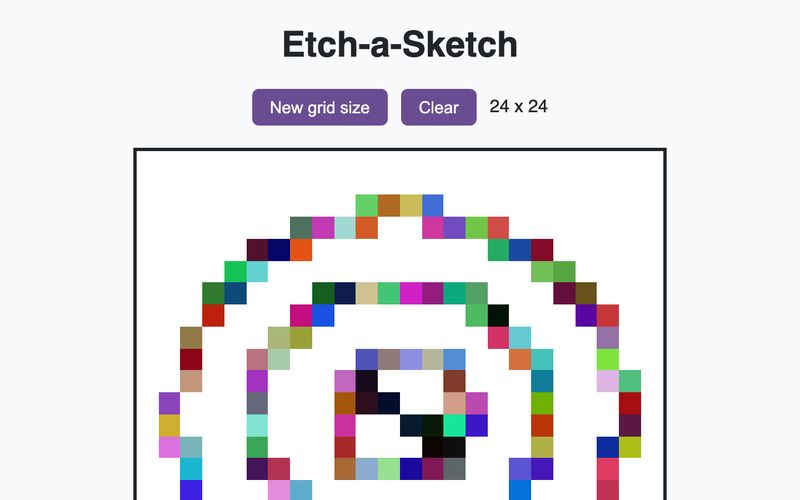
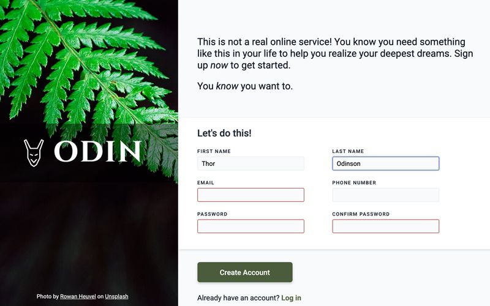
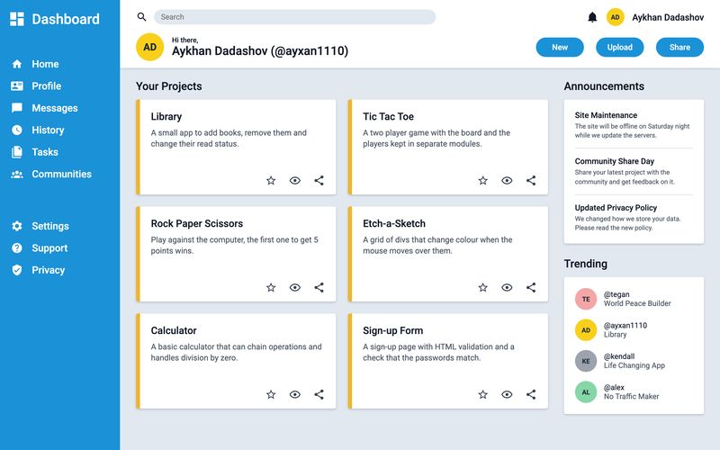

Information Systems student & software developer
Hi, I'm Aykhan Dadashov.
I study Information Systems and build small web projects in Riga, Latvia. I was born in Azerbaijan, and I'm learning to write clean HTML, CSS and JavaScript with The Odin Project. Off the screen you'll find me on a basketball court or in the gym.
- Riga, Latvia
- From Azerbaijan
- Basketball
- Gym
My work
Six projects from The Odin Project. Each one is hosted on GitHub Pages and the code is open on GitHub.
-

Library
Add books, mark them as read or unread, and remove them from your shelf.
-

Tic Tac Toe
A two-player game with player names, turn display and win detection.
-

Calculator
A basic calculator that chains operations and handles division by zero.
-

Etch-a-Sketch
A grid of divs that change colour when the mouse moves over them.
-

Sign-up Form
A sign-up page with a photo side panel and built-in form validation.
-

Admin Dashboard
A dashboard layout built with CSS Grid: sidebar, top bar, cards and side column.
Let's build something.
Want to see more of my code or say hello? You can find me on GitHub or on my portfolio site.